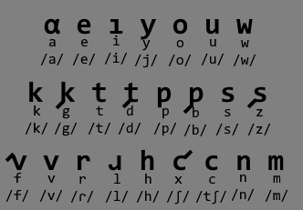

DISIOMA
a language bacause i hate what already exists
Writing/Reading: Disaci script, Sounds
Basic stuff: Word origins
1. Writing/Reading
this is strange(?) but its at least more consistent than english which is good enough
1.1. Disaci script

disaci (dis(a), this and ci, symbol) is a silly script copying latin because its . kind of a mess
its mostly just normal latin except:
- voiced consonants get a "," instead of being completely different (similar with f/v and x/c)
- minor vowel changes for convenience
- and l becomes upside down r
1.2. Sounds
so theres those funny letters at the bottom that go /something/
thats ipa but if you dont care about it, the relevant ones go like this:
- /a/ is like father
- /e/ is like berry
- /i/ is like see
- /j/ is yes
- /o/ is like more
- /u/ is like food
- /ɾ/ is usa english atom (or spanish caro)
- /ʃ/ is like emotion
- /tʃ/ is like china
why are half the issues vowels english i hate you
1.3. Syllable silliness
you know how a lot of natural languages have tons of consonants together
well thats cringe so here the worst you can get is (C(Y))V(N) with C being consonants, Y being semivowels (y and w), V being vowels and N being n and m
is this mostly stolen from japanese ? yes ! is that an issue ? no !
2. Basic Stuff
you know i wonder why do i capitalize titles if i dont capitalize anything else
this has how the language works, by basics i mean everything because theres nothing else ive decided yet
2.1. Word origins
this language steals words from other langauges
intending to have the fewest changes possible (so that sand could be arena stolen from spanish arena, no changes) without it also stealing only from few languages
this could make things messy and confusing fortunately i have a solution: compounds
instead of having 328947923784 random words i combine a bunch and make it easier to remember(?)
as for these, if the original word ends with a consonant (so "this" becomes "disa") the extra vowel can be removed if theres another vowel: disioma comes from "disa" meaning "this", and "ioma" meaning "language" (which comes from spanish idioma)
despite all of this, there are a bunch of original and "original" words
2.2. Nouns and adjectives
Those Which Identify and Those Which Describe
its just like . the same as english:
"rabe kauca"
thats it for now im lazy